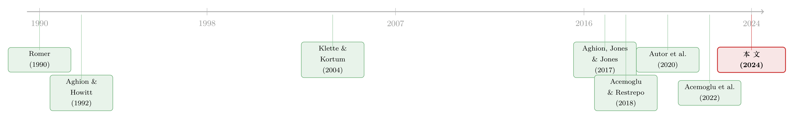

把「人」当成望远镜：从 5.35 亿份简历里，看见 AI 怎样喂大了超级明星公司
本文读的是 Babina, Fedyk, He & Hodson (2024, Journal of Financial Economics)：他们用员工简历里的 AI 技能，造出一把能照见公司层面 AI 投入的「尺子」，发现 AI 投入更多的公司在销售、雇佣、市值上都长得更快——而这份增长，几乎全部来自产品创新，而不是教科书里常说的「机器换人、降本增效」。更要紧的是，AI 的红利偏偏落在本就更大的公司头上，于是把行业越推越「集中」。
1 一个谁都想问、却没人能答的问题
过去十年，最热的词大概就是人工智能（artificial intelligence, AI）。投资人把它写进每一份招股书，CEO 把它挂在每一场电话会议上。2018 年德勤的一份调查里，70% 的高管相信 AI 会在五年内「根本性地改造」自己的公司和行业。
可经济学家心里一直憋着一个尴尬的问题：这些钱，到底买回来了什么？
一边是铺天盖地的乐观叙事；另一边，是过去十年死气沉沉的总量生产率。于是有人开始怀疑：AI 是不是又一个被过度炒作（over-hyped）的泡沫？或者，它的好处需要很久很久才显现（Brynjolfsson, Rock & Syverson, 2021 把这叫做「生产率 J 曲线」）？
要回答这个问题，你得先迈过一道几乎所有人都被卡住的门槛——你根本没有公司层面的 AI 投入数据。AI 不像厂房、不像机器人，它没有一张发票、没有一个海关编码。它藏在算法里、藏在工程师的脑子里。Seamans 和 Raj (2018) 早就点破：缺乏全面的、公司层面的 AI 采用数据，是理解 AI 经济影响的头号障碍。
没有尺子，一切讨论都只是隔空喊话。所以这篇论文真正的起点，不是某个回归系数，而是一句朴素的追问：我们能不能造一把尺子，把「看不见的 AI」量出来？
2 把「人」当成望远镜
作者的答案很巧妙，也很「金融」：既然 AI 高度依赖人——依赖会机器学习、会计算机视觉、会自然语言处理的那批人——那就从人身上去读 AI。
这就是本文的第一个、也是最核心的创新：一套基于人力资本的 AI 投入度量（human-capital-based measure of AI investments）。
核心直觉：AI 是一种「人力密集」的无形资本。买机器人，你要的是资本支出；搞 AI，你首先要抢的是人。所以，一家公司雇了多少 AI 技能的员工，就泄露了它在 AI 上压了多重的注。
他们手里攥着一组别人没有的数据组合：
- 简历数据来自 Cognism，覆盖全球 535 million（5.35 亿）个人的完整工作履历——这是 AI 人才的存量（stock）；
- 招聘广告数据来自 Burning Glass，覆盖 180 million（1.8 亿）条职位空缺——这是 AI 人才的需求（demand）。
光有数据还不够，难点在于：怎么判断一份工作「跟 AI 有关」？传统做法是预先列一张关键词清单，但 AI 的应用千变万化——同一家公司里（比如卡特彼勒），AI 可能既用在用计算机视觉改进机械，又用在给机器操作员卖一套物联网式的分析服务。一张静态的词表注定挂一漏万。
于是作者祭出一招数据驱动、不依赖预设词表的算法：
首先，他们盯住三个「核心 AI 技能」——机器学习、计算机视觉、自然语言处理；接着，看每一项技能与这三个核心技能在招聘广告里的共现（co-occurrence）程度，由此给每一项技能算出一个「AI 相关度」；然后，把一份职位所要求的全部技能的 AI 相关度平均，得到这份职位的 AI 相关度；最后，再拿这些最具 AI 相关度的技能，去那份结构松散得多的简历数据里，给每一位员工、每一段工作经历打上「是不是 AI 岗」的标签。
把员工和职位都聚合到公司层面，再匹配到 Compustat 上市公司，一家公司的 AI 投入就有了刻度。两套独立数据（简历的存量、招聘的需求）造出来的度量高度相关、结论一致——这本身就是一次漂亮的交叉验证。
光看趋势就够震撼：无论简历还是招聘数据，AI 岗位的占比从 2010 到 2018 翻了七倍多。科技业占比最高，但各行各业的增速却惊人地相似——这正是「AI 是一种通用目的技术（general purpose technology, GPT）」最朴素的证据。
3 识别策略：从「长差分」到一把大学的钥匙
有了尺子，接着，一个自然的问题是：AI 投入更多的公司，是不是长得更快？
技术变迁是个慢变量，效果不会一夜显现。所以作者的主设定，是一个长差分回归（long-differences regression）——拿 2010→2018 这八年里公司结果的变化，去回归同期公司 AI 投入（AI 员工占比）的变化。这种做法在研究技术变迁这类「慢过程」时是标准操作（Acemoglu & Restrepo, 2020）。可以把它写成：
$$ \Delta y_i = \alpha + \beta \,\Delta \mathrm{AI}_i + \gamma' X_i + \delta_{j(i)} + \varepsilon_i $$
用一个带标注的方框，把这条「主力方程」拆开来看：
长差分的好处是：取了差分，所有不随时间变化的公司特征都被消掉了。结果非常干净——AI 投入每增加一个标准差，对应：
- 销售额增长
+19.5%； - 雇佣增长
+18.1%； - 市场估值增长
+22.3%。
而且这套结果在制造、金融、零售等所有主要行业里都成立，再次坐实了「通用目的技术」的判断。
但真正关键的一步在于：相关不等于因果。会不会是「本来就要起飞」的好公司，顺手多招了 AI 人？或者是某个看不见的冲击，同时推高了增长和 AI 招聘？
作者层层设防。第一，用面板数据做了一个标准的超前—滞后（lead-lag）模型：在 AI 投入之前，公司增长没有任何预趋势（pre-trends）；增长发生在 AI 投入之后滞后两到三年——这既排除了「好公司自选择」，又说明 AI 的效果不是立竿见影。第二，控制了过去的公司／行业增长、以及用托宾 q（Tobin's q）代理的未来增长机会，结果不变。第三，也是最让人安心的一步：把同期对机器人、非 AI 信息技术、非 AI 数据分析的投入都塞进回归，AI 的系数纹丝不动——它捕捉的的确是 AI，而不是「数字化」这个大箩筐。
然后，作者掏出了压箱底的工具变量（instrumental variable, IV）。
思路是这样的：AI 落地最大的瓶颈，是抢不到受过 AI 训练的人（CorrelationOne, 2019）。而那些在 AI 研究上历史悠久、底子厚的大学，近年能批量产出 AI 毕业生。于是，一家公司在 2010 年之前与这些「AI 强校」的招聘网络有多紧密，就决定了它后来能多容易地招到 AI 人才。
作者为此专门搭了两套新数据：(i) 各大学事前的 AI 研究强度，(ii) 2010 年前的「公司—大学」招聘网络。识别的关键在于排他性约束（exclusion restriction）：商业界对 AI 的兴趣是 2012 年之后才普遍燃起的，所以 2010 年公司与 AI 强校的联系，并非出于招 AI 人的需要，也不与 2010 年前的公司增长相关。第一阶段很强，被工具变量「干净」预测出来的那部分 AI 投入，依然稳健地预测了 2010–2018 的公司增长。作者还特意验证：结果不是被 AI 强校的其他特征（比如计算机科学整体实力、或大学综合排名）驱动的。
这是一套教科书级别的「带着镣铐跳舞」。
4 反转：增长来自「造新东西」，而不是「换掉人」
到这里，故事本可以收尾了——「AI 让公司增长」。但论文最精彩的地方，是它没有停在「增长」，而是继续追问：这份增长，到底从哪条路来？
理论上有两条并不互斥的路：
- 渠道一：产品创新。 AI 降低了开发新产品、改进老产品的成本，让公司「造出更多东西」（Klette & Kortum, 2004; Hottman et al., 2016）。产品开发本质上是一场漫长、结果不确定的实验（Braguinsky et al., 2021），而 AI 恰恰擅长从海量数据里快速学习、削减实验的不确定性。
- 渠道二：流程创新 / 降本。 AI 替代部分人工、提升运营效率，为已有产品降成本——这正是过去几十年研究自动化时的经典剧本（Acemoglu & Restrepo, 2018 的任务模型）。
于是反转出现了。作者拿数据去检验这两条渠道，结论旗帜鲜明：
支持渠道一，否定渠道二。
- 在产品创新这边：AI 投入更多的公司，产品专利（product patents）更多、商标（trademarks）更多、产品组合更新更频繁（产品专利与流程专利的区分依据 Ganglmair et al., 2021；商标度量依据 Hsu et al., 2021）。
- 在流程创新这边：AI 投入与人均销售额、全要素生产率（TFP）、流程专利（process patents）统统没有显著关系。
换句话说，在我们这个时点上，AI 的第一序效应不是「机器换人」，而是「让公司学得更快、从而造出更多产品」。这跟人们对 AI 的直觉恰恰相反——大家最担心的失业故事，至少在公司层面、至少到 2018 年，并不是主线。
这个发现也漂亮地把几篇看似矛盾的文献串了起来：Rock (2019) 发现谷歌 TensorFlow 开源后，AI 暴露度高的公司市值大涨、生产率却没动——产品创新渠道正好解释了这种「估值涨、生产率平」的组合；Hirvonen, Stenhammar & Tuhkuri (2022) 在芬兰也发现，制造业机器人主要通过产品创新而非降本来帮助公司成长。
这里要小心一个常见误读：论文不是说 AI 永远不会替代劳动，而是说在它研究的样本与时段里，劳动替代不是公司层面增长的主要驱动。这是一个关于「此刻 AI 长什么样」的实证判断，不是关于「AI 终局」的预言。
5 谁吃到了红利：超级明星，与越来越「集中」的行业
最后一块拼图，把这篇论文从「公司金融」抬升到了「产业组织」乃至「宏观」。
作者按初始规模把公司分组，发现 AI 投入与增长的正相关，在事前更大的公司那里强得多。这与一类理论吻合：数据是 AI 的关键投入，而大公司天然握有更多数据，于是 AI 会放大不平等、偏向大公司（Mihet & Philippon, 2019; Farboodi et al., 2019）。AI 尤其能压低那些对大公司而言本就高昂的产品开发成本（Akcigit & Kerr, 2018），让大象更轻盈地起舞。
接着的问题是：公司层面的增长，会不会只是把蛋糕从对手嘴里抢过来，在行业层面相互抵消？毕竟 Basu, Fernald & Kimball (2006) 提醒过，技术进步在总量上甚至可能是收缩性的。但作者发现，在 Compustat 样本内，AI 投入更多的行业，整体销售与雇佣也在增长——并非纯粹的零和。
代价是：AI 投入与行业集中度（industry concentration）的上升相关联。这与「无形资本推高了最大公司、加剧了产业集中」的假说一脉相承（Crouzet & Eberly, 2019），也呼应了「超级明星公司（superstar firms）」这一整条文献（Autor et al., 2020; Gutiérrez & Philippon, 2017）。AI，可能正是制造超级明星的新引擎——它强化的是一种「赢家通吃（winner-take-most）」的动态。
（关于「无形资本如何把最大的公司越喂越大」这条线，本博客里也有不少呼应，比如《机器人去哪儿了？——一场被高估的「第四次工业革命」》就给「机器换人」的叙事泼过一盆冷水；而《两种市场收益的故事：当「市场组合」其实只是一小撮巨头》则从市场组合的角度，让我们看到「巨头化」对资产定价意味着什么。）
6 文献脉络
这篇论文的位置，可以放在三条河流的交汇处。
第一条河，是「技术与增长」的宏观传统。 从 Romer (1990)、Aghion & Howitt (1992) 的内生增长，到 Kogan et al. (2017) 用专利价值度量技术变迁；再到 AI 时代，Aghion, Jones & Jones (2017) 直接把 AI 写进增长模型，Cockburn, Henderson & Stern (2018) 论证 AI 能通过加速知识积累来激发创新。本文给这条宏大叙事，补上了一块公司层面的微观证据。
第二条河，是「自动化与劳动」的实证传统。 Acemoglu & Restrepo (2018, 2020) 的任务模型主导了人们对技术的想象——技术 = 替代劳动。Acemoglu et al. (2022b) 用 Burning Glass 招聘数据，从公司的职业结构出发研究 AI 暴露对劳动需求的影响。本文的反转恰在于：当你直接度量 AI 投入、并去看产品创新时，劳动替代退居其次，产品创新走到台前。

第三条河，是「无形资本与超级明星」的公司金融传统。 度量无形资本，过去多用 R&D、SG&A 这类成本项（Eisfeldt & Papanikolaou, 2013; Peters & Taylor, 2017; Crouzet & Eberly, 2019）。本文则贡献了一种基于人力资本的全新度量法——它不仅能量 AI，还能量机器人、非 AI 信息技术、非 AI 数据分析。沿着用文本／数据刻画无形资产的潮流（Hoberg & Phillips, 2016; Kogan et al., 2019; Fedyk & Hodson, 2023），本文把「望远镜」对准了 AI，并把镜头里看到的东西，接到了 Autor et al. (2020)、Gutiérrez & Philippon (2017, 2019) 关于超级明星与产业集中的那场大辩论上。
7 评论与延伸（Q&A + 研究方向）
(a) 几个可能的疑问
Q：用「员工技能」来度量 AI 投入，会不会只是在度量「公司有钱、能招贵的人」？
这正是作者最防的一点。他们做了三件事：一是把同期对机器人、非 AI IT、非 AI 数据分析的投入全控制住，AI 系数不变——说明捕捉的是 AI 而非泛数字化；二是用大学 AI 强校的招聘网络做 IV，剥离掉「好公司自选择」；三是验证 2010 年的大学联系与 2010 年前的增长无关。综合看，「有钱招贵人」这个替代解释被压得比较低，但无法 100% 排除高技能人力资本的一般性溢价。
Q：长差分只看 2010 和 2018 两个端点，会不会被某一年的异常值带偏？
作者用了超前—滞后的面板模型作为补充：逐年看 AI 投入前后的增长动态，发现投入前无预趋势、投入后滞后两三年才显现。这种「干净的时间形状」是长差分本身给不了的，恰好补上了端点法的短板。
Q：「没有发现劳动替代」是不是因为样本只到 2018、还太早？
很可能。论文的结论严格说是「到目前为止，第一序效应在产品创新」。生成式 AI 的大爆发在 2022 年之后，劳动替代的故事完全可能在更新的数据里变得更重。把这理解成「AI 终局无失业」是过度解读。
Q：产品专利、商标真的等于「产品创新」吗？会不会只是大公司更会申请专利？
作者特意区分了产品专利 vs 流程专利（Ganglmair et al., 2021）：如果只是「大公司爱申请专利」，两类专利都该上升；但实际只有产品专利上升、流程专利不动。这个不对称是关键证据，单靠「申请倾向」难以解释。
Q：行业集中度上升，到底是好事还是坏事？
论文保持了克制：它只说 AI 与集中度上升相关，且这种集中伴随行业整体销售与雇佣的增长（不是纯零和）。但它也明确呼应了「赢家通吃」的担忧。是「好的集中」（高效大公司胜出）还是「坏的集中」（市场势力固化），论文没有、也无法给出最终裁决。
Q：这套度量能不能搬到非美国、非上市公司？
原则上能，但受限于数据覆盖。Cognism 号称覆盖 2018 年 64% 以上的全职美国就业，这在美国上市公司里很稠密；一旦下沉到私人公司或其他国家，简历覆盖率和职位描述质量都会打折，度量噪声会显著上升。
(b) 几个可能的研究问题与提案
1. AI 投入与公司债定价 / 信用利差
【经济故事】如果 AI 通过产品创新系统性地抬高公司增长与市值，那它也在重塑公司的违约距离与现金流久期。一个自然的问题是：债券市场给 AI 投入定价了吗？是当作降低违约风险的好消息（利差收窄），还是当作烧钱、加大不确定性的风险（利差走阔）？尤其在「赢家通吃」格局下，落后者的信用利差是否被动走阔？
【可行性】高。把本文的公司层面 AI 度量（数据已公开于 Mendeley）匹配到
TRACE公司债交易与Mergent FISD发行数据即可。识别上可沿用本文的大学 IV，看被工具变量预测的 AI 投入对一级发行利差／二级利差的影响。数据与方法都现成。
2. 外资持有人对 AI「叙事」的反应
【经济故事】超级明星公司同时也是外资重仓的对象。AI 红利在大公司集中，会不会进一步把外资被动资金（指数化需求）锁向这批巨头？外资持股是否反过来通过治理或资金成本渠道，加速了这些公司的 AI 投入？
【可行性】中。需要
FactSet/Refinitiv的机构持股（按国别拆分）+ 本文 AI 度量。难点在识别外资持股与 AI 投入的因果方向——可考虑用指数纳入（如 MSCI 重定权）作为外资需求的外生冲击。doable，但识别要小心。
3. AI 与公司债二级市场流动性
【经济故事】若 AI 强化了产业集中，最大发行人的债券会变得更「基准化」、被更多投资者持有，可能改善其二级流动性；而被甩下的中小发行人则相反。AI 可能正在重新分配信用市场的流动性。
【可行性】中。
TRACE算 bid-ask、Amihud 等流动性指标，匹配公司 AI 度量，按初始规模分组看流动性的「分化」。挑战在于把 AI 的影响与规模本身的影响干净地分开——本文「按初始规模分组」的做法可以直接借鉴。
4. AI 投入的「产品创新」是否真的转化为产品市场份额
【经济故事】专利和商标是创新的投入/中间产物，不等于市场胜利。能不能用扫描数据（Nielsen）或 Hoberg-Phillips 的文本产品相似度，直接看 AI 投入更多的公司是否抢到了更多产品市场份额、其产品组合是否更快迭代？
【可行性】中。需要产品级数据（消费品行业可得，工业品较难），匹配 AI 度量。识别可继续用大学 IV。对消费品行业 doable，全样本较难。
5. 把度量推广到生成式 AI（2019 之后）
【经济故事】本文止于 2018，正好在大模型革命之前。用同一套「从简历/招聘技能学 AI 相关度」的算法，把核心技能扩展到「大语言模型、提示工程、向量数据库」等，能否刻画 2019–2025 这一波，并检验劳动替代渠道是否终于浮现？
【可行性】高。方法完全可复制，只需更新数据与核心技能词。这几乎是本文最自然、也最有价值的续集。
我的判断
这是一篇「方法论先行、再用方法论撬动大问题」的范本。它最硬的贡献有两个：一把可复制、可推广的 AI 度量尺，和一个反直觉但证据扎实的结论——AI 当下的红利来自产品创新而非降本换人。把这两点接到「超级明星 / 产业集中」的辩论上，让一篇看似「测量 AI」的论文，有了宏观分量。
对识别，我仍有两点保留。其一，IV 的排他性约束虽然论证得很用心（2012 年才商业化、2010 年联系不预测早期增长），但「与 AI 强校的招聘网络」难免与一所学校的整体科研生态、地理位置、毕业生整体素质纠缠在一起；作者做了 placebo（控制计算机科学实力、大学排名），缓解了担忧，却未必能完全切断。其二，度量本身的内生噪声：简历数据的覆盖在大公司更稠密，这可能机械地让「大公司 AI 投入更高」，从而部分地驱动了「AI 偏向大公司」这一核心结论——我希望看到更系统的覆盖率稳健性检验。
后续我最想看到的，是把时钟拨到生成式 AI 之后：当 LLM 把许多白领任务推到可替代的边缘，本文「劳动替代不是主线」的结论会不会反转？以及——这正是我自己关心的方向——信用市场有没有、以及如何，给这场静悄悄的「AI 造星运动」定价。
参考文献
- Acemoglu, D., Autor, D., Hazell, J., Restrepo, P. (2022). Artificial intelligence and jobs: Evidence from online vacancies. Journal of Labor Economics 40(S1), S293–S340.
- Acemoglu, D., Restrepo, P. (2018). The race between man and machine: Implications of technology for growth, factor shares and employment. American Economic Review 108(6), 1488–1542.
- Acemoglu, D., Restrepo, P. (2020). Robots and jobs: Evidence from U.S. labor markets. Journal of Political Economy 128(6), 2188–2244.
- Aghion, P., Howitt, P. (1992). A model of growth through creative destruction. Econometrica 60(2), 323–351.
- Aghion, P., Jones, B.F., Jones, C.I. (2017). Artificial intelligence and economic growth. NBER Working Paper w23928.
- Agrawal, A., Gans, J.S., Goldfarb, A. (2019). Artificial intelligence: The ambiguous labor market impact of automating prediction. Journal of Economic Perspectives 33(2), 31–50.
- Autor, D., Dorn, D., Katz, L.F., Patterson, C., Van Reenen, J. (2020). The fall of the labor share and the rise of superstar firms. Quarterly Journal of Economics 135(2), 645–709.
- Babina, T., Fedyk, A., He, A., Hodson, J. (2024). Artificial intelligence, firm growth, and product innovation. Journal of Financial Economics 151, 103745.
- Basu, S., Fernald, J.G., Kimball, M.S. (2006). Are technology improvements contractionary? American Economic Review 96(5), 1418–1448.
- Braguinsky, S., et al. (2021). Product innovation, product diversification, and firm growth: Evidence from Japan's early industrialization. American Economic Review 111(12), 3795–3826.
- Brynjolfsson, E., Rock, D., Syverson, C. (2021). The productivity J-curve: How intangibles complement general purpose technologies. American Economic Journal: Macroeconomics 13(1), 333–372.
- Cockburn, I.M., Henderson, R., Stern, S. (2018). The impact of artificial intelligence on innovation. NBER Working Paper w24449.
- Crouzet, N., Eberly, J.C. (2019). Understanding weak capital investment: The role of market concentration and intangibles. NBER Working Paper w25869.
- Eisfeldt, A.L., Papanikolaou, D. (2013). Organization capital and the cross-section of expected returns. Journal of Finance 68(4), 1365–1406.
- Klette, T.J., Kortum, S. (2004). Innovating firms and aggregate innovation. Journal of Political Economy 112(5), 986–1018.
- Kogan, L., Papanikolaou, D., Seru, A., Stoffman, N. (2017). Technological innovation, resource allocation, and growth. Quarterly Journal of Economics 132(2), 665–712.
- Mihet, R., Philippon, T. (2019). The economics of big data and artificial intelligence. International Finance Review 20, 29–43.
- Rock, D. (2019). Engineering value: The returns to technological talent and investments in artificial intelligence. Working paper.
- Romer, P.M. (1990). Endogenous technological change. Journal of Political Economy 98(5), S71–S102.